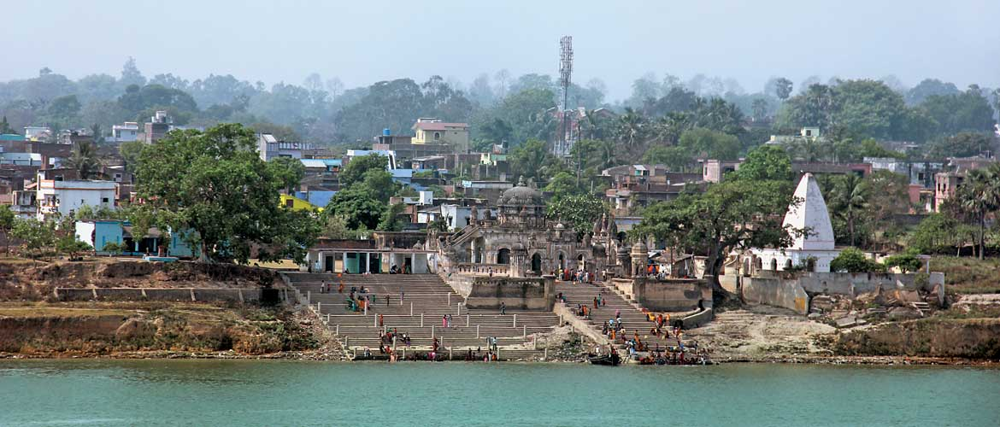
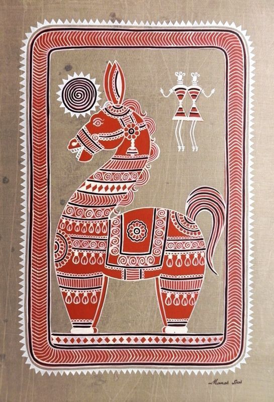

BHAGALPUR!
A riverside city on the southern bank of the Ganga, spun from silk thread and old stories — where an ancient trade port grew into the capital of Anga, and where snake-goddess folklore still gets painted on temple-shaped boxes every year.

A city known for a few very specific things
Bhagalpur, on the southern bank of the Ganges in Bihar, is globally known as the "Silk City of India" for its centuries-old tradition of weaving premium Tussar silk. But that's only the headline — it's also home to GI-tagged Jardalu mangoes, the sequential folk-painting tradition of Manjusha art, and the Vikramshila Gangetic Dolphin Sanctuary, one of the few protected stretches of river anywhere in Asia for the endangered Gangetic dolphin.


Pick your panel
History & Lore
Ancient Anga, medieval Mughal patronage, the Bihula-Bishahari legend, and the modern city.
People & Culture
Who lives here, what language they speak, and the festivals that light up the calendar.
Places to Visit
Ghats, temples, a Buddhist university in ruins, and a dolphin sanctuary on the Ganga.
Market & Commerce
Inside the silk trade, the handloom clusters, and the bazaars that keep the city running.
Food & Dine-Out
Litti-chokha, chana ghugni, and where locals actually take their guests to eat.
Education
Tilka Manjhi Bhagalpur University and the colleges that train the city's next generation.